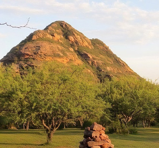
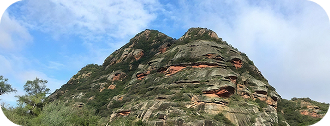
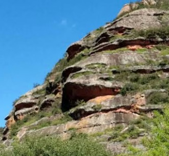
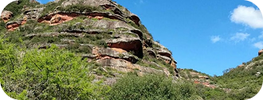
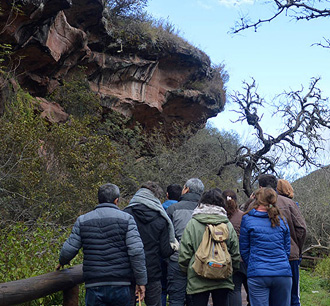
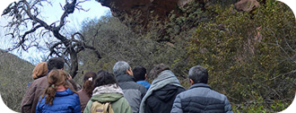
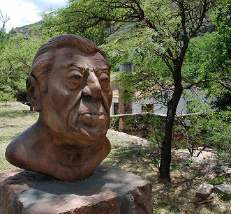
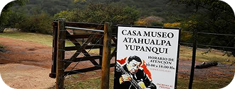
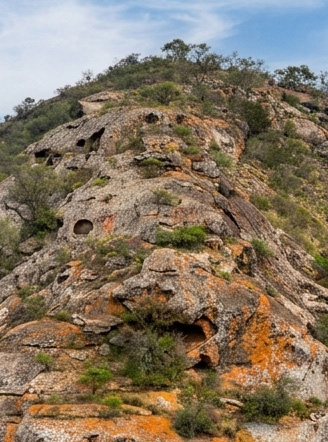

Reserva Cultural y Natural Cerro Colorado
Conocé uno de los sitios arqueológicos más importantes de Córdoba.
¿Por qué visitar Cerro Colorado?
Una experiencia que convina naturaleza, cultura y turismo.









Postulación a Patrimonio Cultural Mixto
El Patrimonio Mundial Mixto es una categoría de la UNESCO para lugares que tienen un valor excepcional tanto cultural como natural. La UNESCO es la Organización de las Naciones Unidas para la Educación, la Ciencia y la Cultura.
Criterios para su postulación
- Se encuentran y se observan pictografías de los primeros pueblos que se asentaron en la zona, estos pueblos en la actualidad ya no existen, pero han dejado su huella y su cultura. (basado en el criterio 3)
- Se encuentra entre sierras formadas hace miles de años por bloques de arenisca roja y arroyos que rodean los cañadones (producidos por lluvia y arroyos). Fue producto de la evolución terrestre, la Cordillera de los Andes y su levantamiento provoco que la biodiversidad y clima del lugar sean transformados. (Basado en el criterio 8)
- Proceso de cambio de hábitat de diferentes especies de fauna y flora, que se han adaptados a estos cambios. (Basado en el criterio 9)
- Especies como el zorro gris,aves rapaces y flora únicas,(el Mato) necesitan de la concervación para que puedan seguir habitando y no desaparezcan (Criterio 10)

Naturaleza y biodiversidad
Conozcamos la fauna
Sus quebradas, laderas, llanos y cerros conforman distintos ambientes donde conviven aves, mamíferos, reptiles e insectos.

Naturaleza y biodiversidad
Conozcamos la flora
El bosque serrano reúne especies como algarrobos, talas, chañares, mistoles y cardones.

Patrimonio Arqueológico
Conozcamos el arte rupestre
Las pictografías son huellas de los pueblos originarios que habitaron la región y forman parte de su patrimonio cultural.